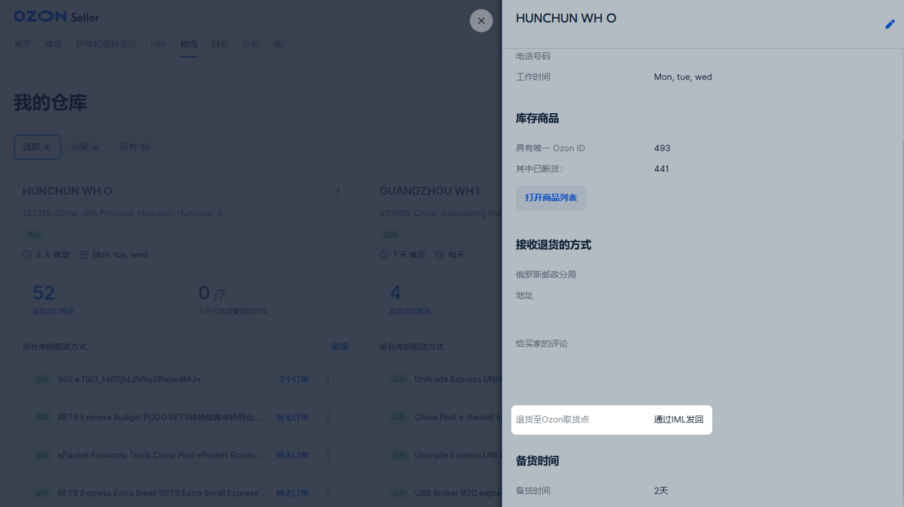
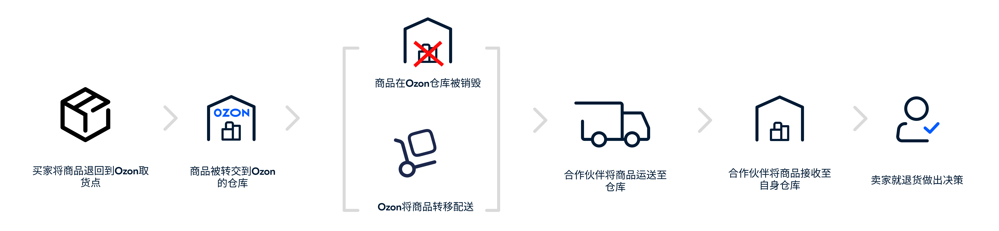
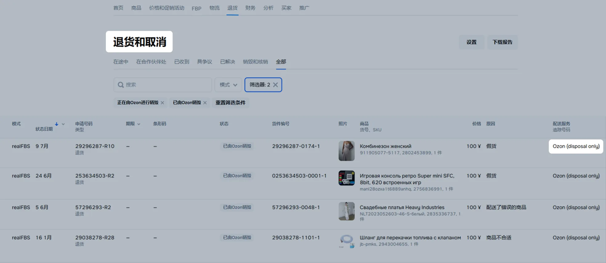
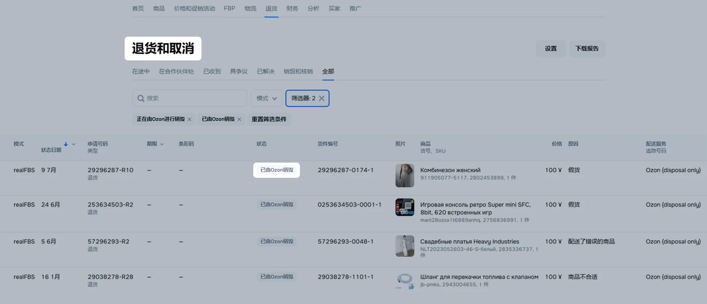
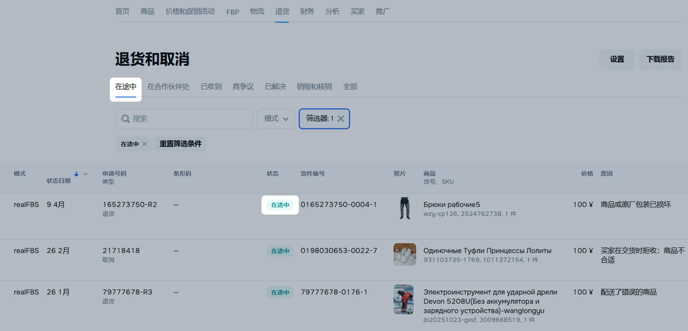
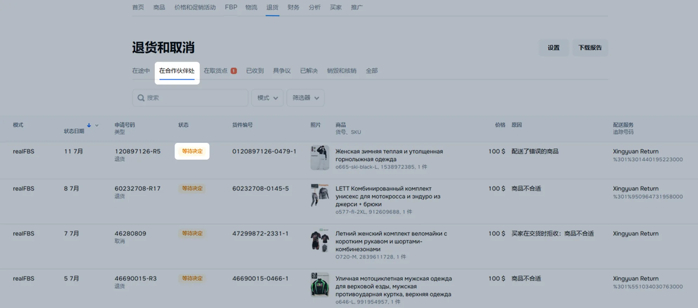
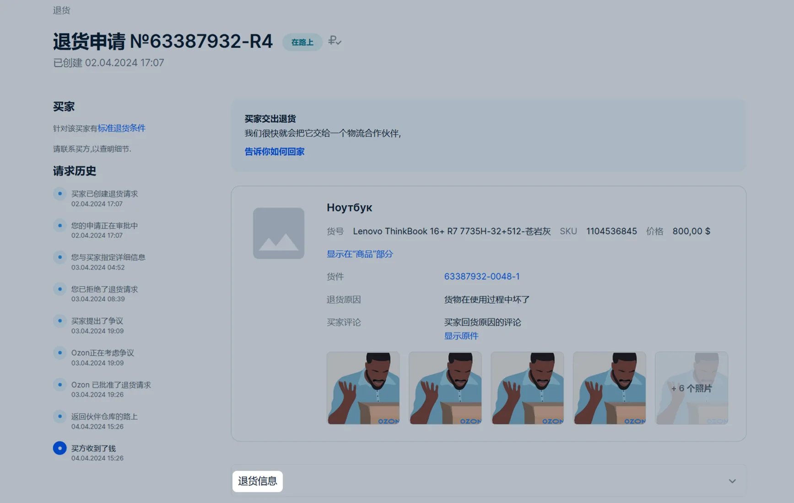
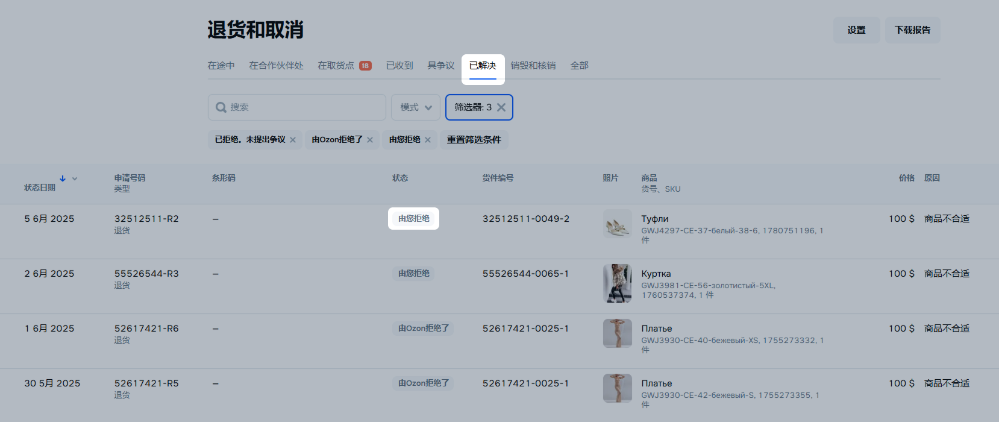
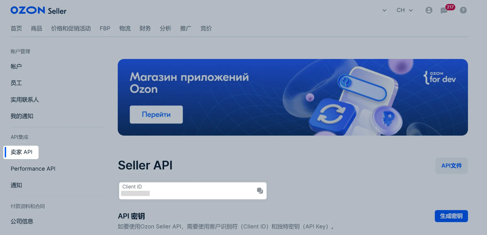
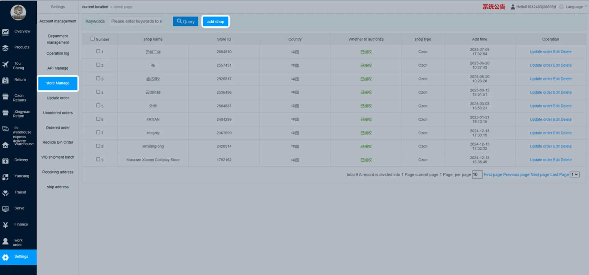

自2026年5月6日起，可通过WHD仓库发货。 关于客户退货寄送去向的详细信息
自2026年5月6日起，我们将关于退货的文章移至 单独部分 。
工作原理
请在编辑或创建仓库时选择退货合作伙伴或由Ozon销毁。
在创建仓库时，您需要决定如何处理退货。同一个仓库只能选择一种退货方式。对于现有仓库，退货合作伙伴已默认选择。
退货服务商 GBS 仅处理来自阿联酋的退货。
仓库的直流和回流物流服务商可能不同。要查询当前回流合作伙伴，请在 Ozon 个人中心的 物流 → 物流管理 页面，点击仓库名称查看详细信息。

如果您决定接收退货而不是Ozon销毁，请在所选合作伙伴的平台上注册。
将商品转移给合作伙伴后，请在合作伙伴的网站上创建退货处理订单。

您可以在 退货报告 中查看退货信息。
取货点退货限制
当买家在取货点退货时，Ozon工作人员会对商品进行检查。 如果退货申请中填写的是其他商品，或商品已被使用且买家因“不合适/不喜欢”等原因退货，买家将被拒绝办理退货。
此外，以下情况也无法在取货点退货：
商品为超大商品：
重量超过35公斤；
最大边长超过200厘米；
体积超过500升。
买家所在城市没有取货点。
从独联体国家发起退货。取货点退货仅对俄罗斯联邦买家开放。
如果退货在取货点未被验收，买家将自行把退货寄送到您在仓库设置的 从买家处接收退货的方式 模块中填写的地址。
1. Ozon仓库的商品销毁
如果退货被接受，该商品将被发送到最近的Ozon分拣中心进行销毁。
以下情况下，退货将被发送进行销毁：
商品价格5000卢布及以下。
商品价格指的是按兑换率订单日期个人中心的商品价格。
无论个人中心中设置的退货方式如何，价格低于1800卢布的大部分退货保留在买家处。在某些情况下，我们可能会要求买家将价格低于1800卢布的商品退回取货点。例如，在退货频繁情况下。
退回的商品损坏，不能运输。
您在仓库设置选择了“销毁”方式。
如果您在一个月内未对送达物流合作伙伴仓库的退货作出处理决定，默认退货方式将更改为“销毁”适用于所有配送仓库。我们会在7天前通过个人中心提醒您。为了保留当前的退货方式，请在物流合作伙伴的个人中心中对退货作出处理决定。 您可以随时更改退货方式并重新选择将退货发送至物流合作伙伴仓库。
您可在 退货 → 退货和取消 部分了解哪些商品将被销毁。在 配送服务 栏将指定“Ozon(disposal only)”方式。

销毁后，“已由Ozon进行销毁”状态将出现在 状态 列中。

2. 商品已发往合作伙伴仓库并即将到达
您可以在您的Ozon个人帐户中的 退货 → 退货和取消 部分找到您的退货物流合作伙伴以及退货所在位置：
在 在路上 选项卡上，如果在Ozon取货点接受退货并发送至合作伙伴的仓库；

在 在合作伙伴处 选项卡中显示来自承运商的最新状态以及退货在合作伙伴物流中的动向。将退货配送至合作伙伴仓库的平均时间为5-10天。

如需就退货做出决定，请点击 申请编号 栏中的申请编号。在 退货信息 字段中，点击前往合作伙伴网站的链接。

具争议 选项卡中显示已发起争议的申请。
已解决 选项卡中显示状态不可再更改的申请：“由您拒绝”、“已被Ozon拒绝”等。

合作伙伴退货状态
状态 |
描述 |
卖家操作 |
|---|---|---|
合作伙伴已接收 |
合作伙伴已收到商品并正在检查其符合性。 |
请等待检查完成。 |
等待解决 |
商品已通过检查。需要选择处理方法。 |
请进入承运商个人中心并选择服务，如退货、销毁等。 |
合作伙伴正在处理 |
合作伙伴正在执行所选服务，例如准备商品发货。 |
— |
已由合作伙伴放行 |
合作伙伴已完成您所选的服务，例如自提或配送。 |
请在收到商品时进行检查。 |
已由合作伙伴销毁 |
• 您在合作伙伴个人中心中选择了销毁。 • 您未在14天内对退货做出决定。 |
— |
被合作伙伴丢失 |
合作伙伴无法找到商品。 |
请通过承运商的个人中心联系客服。 |
被合作伙伴损坏 |
商品在处理过程中损坏了。 |
请在合作伙伴个人中心请求证据。 |
3. 退货提供商条件
如果您通过阿联酋的FBP仓库进行销售，退货将遵循GBS提供商的条件。
当商品到达合作伙伴仓库时，申请状态将更改为“退货已交给物流合作伙伴”。
如果您在商品配送至合作伙伴仓库后的14天内未对退货做出决定，那么商品将被销毁。
IML个人中心 中将显示退货的编号和状态。
收货后，IML将按照Ozon的条件对商品进行随机检查。您可以要求查看未列入强制性检查名单的商品的照片或视频。您可以在IML个人中心中申请检查。
IML员工将评估商品并为其分配一项特征：
可正常使用的商品；
部分损坏，附照片；
完全损坏，附照片；
商品已被替换。
如果商品被替换了，那么您将可以保留商品金额，而Ozon将封锁该买家。如果被替换的商品的金额已经退还给买家，IML将处理索赔并批准赔偿。
在 订单管理 部分，您可以选择如何处理退货：
将退货留在合作伙伴仓库中，以便自提；
将退货运送到您在俄罗斯、中国大陆或中国香港的仓库；
将退货留下以进行临时存储；
订购付费销毁服务。
从2026年2月19日起无法连接合作伙伴。他会按照您的设定，处理在切换之前发送给他的商品。
在您的 UNI个人中心 中将出现退货的编号和状态。
UNI将检查商品的状态，之后您的UNI个人中心将显示检查结果。
UNI员工将评估商品的质量并为其分配一项特征：
质量良好（新商品）；
质量良好（良好/合格）；
残次品（附上类目）。
在 UNI个人中心 的 退货 → 等待决定 部分，您可以决定如何处理退货：
临时存储；
运送至您在土耳其或中国的仓库；
销毁处理。
自2026年5月12日起，将无法接入该合作伙伴。该合作伙伴将按照您的决定，处理在切换前已发送给该合作伙伴的商品。
在 XY个人中心 中将显示退货商品的编号和状态。
XY会检查商品的状态，之后检查结果会显示在XY的个人中心中。
XY的工作人员会评估商品质量，并为其分配以下其中一种状态：
部分损坏商品，
非本商品，
商品状况良好。
当商品到达仓库后，您可以在XY个人中心的 Ozon退货申请 模块中：
将商品暂存；
将商品发回您在中国或俄罗斯的仓库；
对商品进行销毁处理。
在 URAL 个人中心 中将显示退货商品的号码和状态。
URAL 将检查商品的状态，之后在 URAL 个人中心中将显示检查结果。
URAL 公司员工将评估商品的质量并为其分配以下特征之一：
完好，
包装损坏：附照片，
部分损坏：附照片，
全完损坏：附照片，
货不对版。
当商品到达仓库时，您在 URAL 个人中心的 Ozon 退货请求 部分进行以下操作：
将商品暂存；
将商品发送到中国大陆、中国香港或俄罗斯的仓库；
对商品进行销毁处理。
在合作伙伴平台上注册
请查看退货合作伙伴的条款，并请为每个仓库选择最适合您的条款。
|
|
|
|
| |
|---|---|---|---|---|---|
|
|
|
|
|
|
|
|
|
|
| |
|
|
|
|
| |
|
|
|
|
| |
|
|
|
|
| |
|
|
|
|
| |
|
|
|
|
| |
|
|
|
|
| |
|
|
|
|
|
|
|
|
|
|
| |
|
|
|
|
| |
|
|
|
|
| |
|
|
|
|
|
|
|
|
|
|
|
请阅读注册流程、授权和退货处理的说明：
在 IML官方网站 上创建账户。
进入Ozon个人中心的 设置 → API密钥 ，点击 生成密钥 。
输入密钥名称，并选择 Returns 或 Returns read-only ，根据用户角色进行选择。然后点击 生成 。
保存访问密钥（仅显示一次）。
登录IML账号。
在 系统设置 → 第三方授权 部分，点击 新增授权 。
在 平台信息 字段选择与Ozon集成。
在 业务类型 字段中，选择 退货 。
输入Ozon个人中心中的Seller ID和访问密钥。
确认授权。
在 UNI 官方网站 注册账户。
在Ozon个人中心的 设置 → API 密钥 页面，复制 Client ID。复制方法：在标识符右侧点击 。

在UNI 个人中心的 添加商店 页面，粘贴已复制的 Client ID 。
在Ozon个人中心的 设置 → API密钥 页面，点击 生成密钥 。
输入密钥名称，并选择令牌类型 Product read-only 。然后点击 生成 。
保存访问密钥，该密钥仅显示一次。
登录 UNI 账户。
在 添加商店 页面，将密钥粘贴到 API Key 字段。
请在 XY官方网站 注册账号。
在Ozon个人中心的 设置 → API 密钥 页面，复制 Client ID。复制方法：在标识符右侧点击 。
在XY个人中心中，将复制的ClientID粘贴到WMS系统中。

在Ozon个人中心的 设置 → API密钥 页面，点击 生成密钥 。
输入密钥名称，并选择令牌类型 Product read-only 。然后点击 生成 。
保存访问密钥——该密钥仅会显示一次。
登录XY账号。
在 添加商店 页面，将密钥粘贴到 API Key 字段。
在商店管理页面点击 授权 按钮以完成商店授权。
在 URAL 官方网站 创建账号。
在 Ozon 个人中心的 设置 → API 密钥 部分，点击 生成密钥 。
输入密钥名称，并根据用户角色标记 Returns 或 Returns read-only 。然后点击 生成 。
保存访问密钥（它将仅显示一次）。
登录 URAL 账号。
在 我的商店 → 商店授权 部分，点击 添加新授权 。
在 平台信息 字段中选择与 Ozon 的集成。
在 授权类型 字段中选择“退货”。
请输入 Ozon 个人中心中的卖家 ID 和访问密钥。
请点击 确认 。
Ozon合作伙伴联系方式
合作伙伴 |
联系电话 |
电子邮箱 |
|---|---|---|
IML |
075589589987 |
|
UNI |
8617724702195 |
|
XY |
19128287781 |
|
URAL |
15067168566 15068103169 15068110095 |